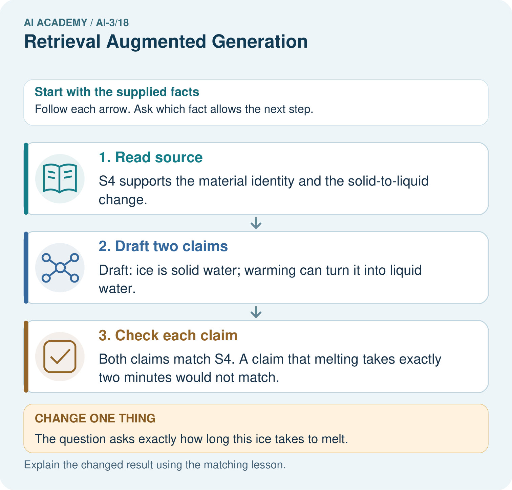
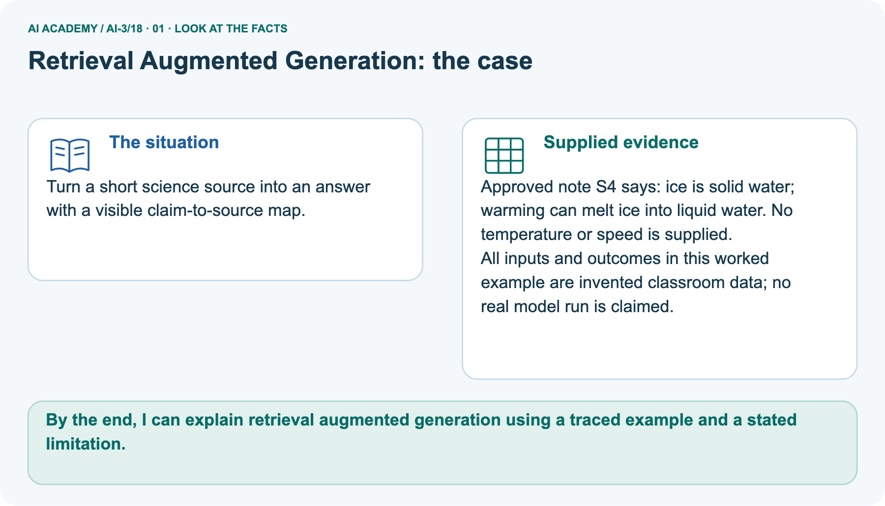
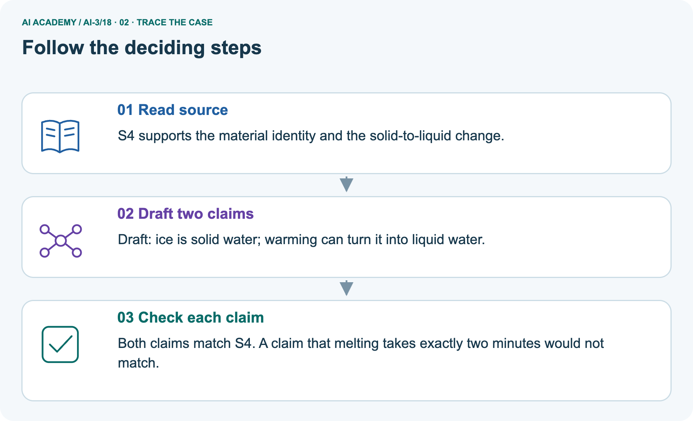
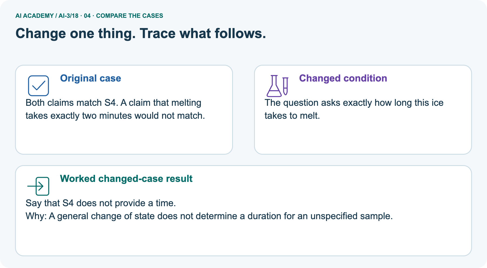
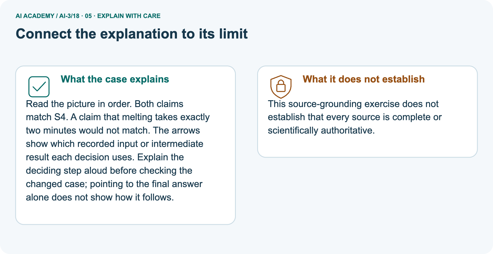
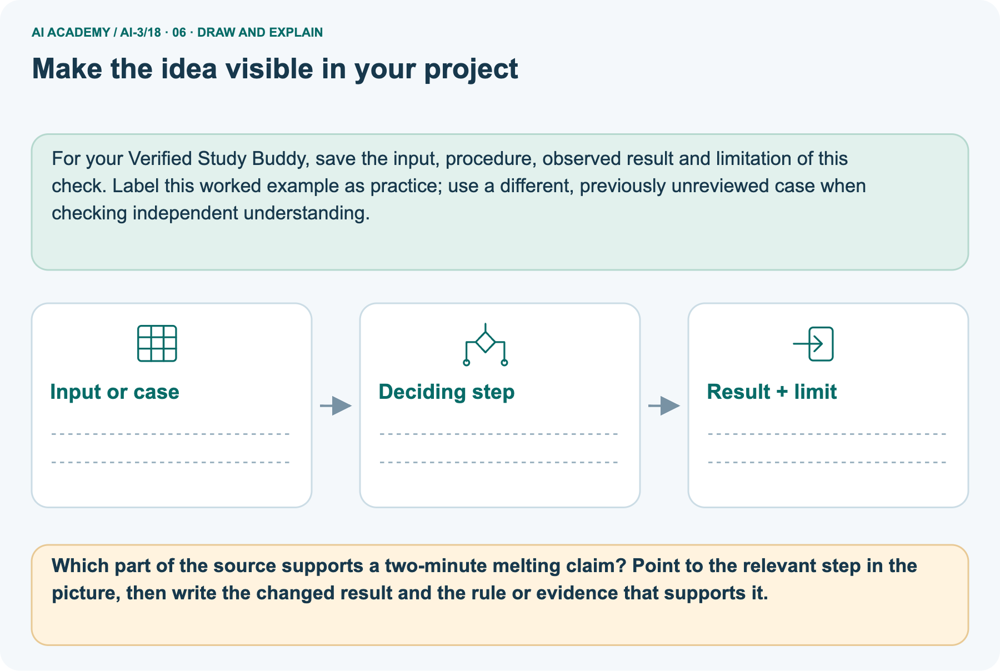

AI Academy · Level 3 · Grade 8 · Week 18 · Workbook
Retrieval Augmented Generation
Learn to understand, design, build, test and explain AI systems responsibly.
Project: Verified Study Buddy
Workbook · 1 of 31
Recall and choose your starting point
Record your starting explanation for Retrieval Augmented Generation before opening notes. Show any later correction separately.
Try the recall before opening notes. Then use a different colour or a labelled second line to correct your explanation.
Model Memory vs Retrieval
Without opening the old lesson, explain one key idea from Model Memory vs Retrieval. Give an example and a mistake that the idea helps you avoid.
Source Quality
Without opening the old lesson, explain one key idea from Source Quality. Give an example and a mistake that the idea helps you avoid.
Speech and Audio Systems
Without opening the old lesson, explain one key idea from Speech and Audio Systems. Give an example and a mistake that the idea helps you avoid.
Workbook · 2 of 31
Practise with fading help
Complete the supported Retrieval Augmented Generation trace and record the first step you can explain without help.
Use W2: Trace the worked case for Building a grounded answer. Record the answer once; the lesson and workbook refer to the same attempt.
| Given inputs | Procedure I chose | Middle steps | Result and check |
|---|---|---|---|
Workbook · 3 of 31
Individual reasoning check
Check the proposed Retrieval Augmented Generation explanation against the supplied facts before discussing it.
Use the worked case for Building a grounded answer. Proposed explanation: “The worked result establishes every future case”. Decide whether this explanation is supported.
Point to the step or supplied fact that decides; explain your repair if needed.
Workbook · 4 of 31
Independent transfer case
Write one first attempt at the reserved independent case before feedback. Repeated copies of that case refer to the same recorded attempt.
Independent case: Apply a new case independently
Source A approves room H; B lists H capacity 7, except maintenance limit 4. Maintenance status is unknown. Write a grounded response.
Attempt this case before feedback. Record any help. Earlier examples below are further practice; a case already practised with feedback cannot establish fresh transfer.
Workbook · 5 of 31
Your learning target
Connect the Retrieval Augmented Generation target to a trace and a justified conclusion.
Sources: A='Library opens 9'; B='Cafe opens 8'; C='Library closes 5'. A question asks when the library opens. The retriever returns only B and C. What should the generator do?
Workbook · 6 of 31
Solve the given case
Solve the supplied Retrieval Augmented Generation case and show the deciding evidence.
Note A says library opens at 9. Note B says returns go in the blue box.
Answer opening time with evidence.
Show your trace, calculation or evidence
Workbook · 7 of 31
Check a changed case
Apply the procedure to the changed case and record why the conclusion follows.
A retrieved passage says the club meets Tuesday; it says nothing about cost. The assistant answers Tuesday, free entry. Which part is grounded and what should replace the unsupported part?
My independent answer and reason
Week 18 Test and reflect
Workbook · 8 of 31
Design a revealing test
Specify a changed input, expected result and observation separately.
Create a changed input, boundary case or missing-information case. Write the expected answer or safe response before testing.
| Test record | My evidence |
|---|---|
| Changed input or condition | |
| Expected answer or fallback | |
| Observed result | |
| Why the result occurred |
Workbook · 9 of 31
Project checkpoint
Justify what Retrieval Augmented Generation adds to Verified Study Buddy and keep the evidence.
Implement question → retrieve → inspect → answer → cite → verify as the core architecture.
The project change and evidence I will keep
Workbook · 10 of 31
Self check
Judge explanation, evidence, transfer and limits separately; attach the work behind your judgement.
- I can explain the mechanism.
- I can show evidence.
- I can handle a changed case.
- I can name a limit.
Mark each as not yet, with help or independently, and attach supporting work.
Teacher review ____________________ Next step ____________________
Workbook · 11 of 31
Transfer practice from the original programme
Use this earlier case as transfer practice. A case already discussed with feedback is not fresh assessment evidence.
Sources: A='Library opens 9'; B='Cafe opens 8'; C='Library closes 5'. A question asks when the library opens. The retriever returns only B and C. What should the generator do?
Record support used: none, hint or teacher explanation.
Workbook · 12 of 31
W1 Explain the mechanism
Explain the mechanism. Apply the supplied Retrieval Augmented Generation facts and keep your reasoning.
Explain the weekly mechanism in your own words. Use the worked scenario to name its input, decision rule and output.
Workbook · 13 of 31
W2 Trace the worked case
Trace the worked case. Apply the supplied Retrieval Augmented Generation facts and keep your reasoning.
Current source P approves room C; Q lists C capacity 10. Draft says room C is approved, seats 10 and offers lunch. Show the intermediate steps and give the conclusion with its scope.
Workbook · 14 of 31
W3 Audit the limit
Audit the limit. Apply the supplied Retrieval Augmented Generation facts and keep your reasoning.
A report omits this qualification: Grounding requires support for the exact claim, including conditions; attaching a source name is insufficient.
Explain how omitting it could change a reader's interpretation, and write an accurate replacement.
Workbook · 15 of 31
W4 Apply a new case independently
Attempt before feedback. If this repeats the selected independent case, reuse that first attempt; otherwise keep a separate record. Apply a new case independently. Apply the supplied Retrieval Augmented Generation facts and keep your reasoning.
Source A approves room H; B lists H capacity 7, except maintenance limit 4. Maintenance status is unknown. Write a grounded response.
Workbook · 16 of 31
W5 Design a revealing follow-up
Design a revealing follow-up. Apply the supplied Retrieval Augmented Generation facts and keep your reasoning.
For the worked scenario, propose one additional case that could reveal a failure, describe its expected outcome before running it, and explain what would need to remain fixed for a fair comparison.
Do not reuse W4 as a new final test after receiving feedback.
Workbook · 17 of 31
Chunking and document structure — W1 Explain the mechanism
Use the supplied Retrieval Augmented Generation task to record your reasoning, evidence and next step.
Explain the weekly mechanism in your own words. Use the worked scenario to name its input, decision rule and output.
Workbook · 18 of 31
Chunking and document structure — W2 Trace the worked case
Use the supplied Retrieval Augmented Generation task to record your reasoning, evidence and next step.
A notice says capacity 20, followed by during maintenance capacity 8. Separate chunks contain each sentence but retrieval returns only the first. Show the intermediate steps and give the conclusion with its scope.
Workbook · 19 of 31
Chunking and document structure — W3 Audit the limit
Use the supplied Retrieval Augmented Generation task to record your reasoning, evidence and next step.
A report omits this qualification: Smaller chunks can improve selectivity while losing necessary qualifiers; chunk size alone is not retrieval quality.
Explain how omitting it could change a reader's interpretation, and write an accurate replacement.
Workbook · 20 of 31
Chunking and document structure — W4 Apply a new case independently
Use the supplied Retrieval Augmented Generation task to record your reasoning, evidence and next step.
A rule section says rooms close at 17:00; an exception paragraph says Friday closes at 16:00. The question is Friday closing. Design a complete chunk reference.
Workbook · 21 of 31
Chunking and document structure — W5 Design a revealing follow-up
Use the supplied Retrieval Augmented Generation task to record your reasoning, evidence and next step.
For the worked scenario, propose one additional case that could reveal a failure, describe its expected outcome before running it, and explain what would need to remain fixed for a fair comparison.
Do not reuse W4 as a new final test after receiving feedback.
Workbook · 22 of 31
Lexical and vector retrieval — W1 Explain the mechanism
Use the supplied Retrieval Augmented Generation task to record your reasoning, evidence and next step.
Explain the weekly mechanism in your own words. Use the worked scenario to name its input, decision rule and output.
Workbook · 23 of 31
Lexical and vector retrieval — W2 Trace the worked case
Use the supplied Retrieval Augmented Generation task to record your reasoning, evidence and next step.
Query terms red sensor. D1 text red sensor manual; D2 text red paint. Their lexical scores are 2 and 1. Vector query [1, 0], D1=[.4, .9], D2=[.8, .1]. Show the intermediate steps and give the conclusion with its scope.
Workbook · 24 of 31
Lexical and vector retrieval — W3 Audit the limit
Use the supplied Retrieval Augmented Generation task to record your reasoning, evidence and next step.
A report omits this qualification: Similarity and relevance are different quantities; exact terminology, metadata and permissions may be necessary.
Explain how omitting it could change a reader's interpretation, and write an accurate replacement.
Workbook · 25 of 31
Lexical and vector retrieval — W4 Apply a new case independently
Use the supplied Retrieval Augmented Generation task to record your reasoning, evidence and next step.
Query terms blue battery. E1 text blue battery guide, vector [.2, .8]; E2 text blue ribbon, vector [.9, .1]. Query vector [1, 0]. Compute both rankings.
Workbook · 26 of 31
Lexical and vector retrieval — W5 Design a revealing follow-up
Use the supplied Retrieval Augmented Generation task to record your reasoning, evidence and next step.
For the worked scenario, propose one additional case that could reveal a failure, describe its expected outcome before running it, and explain what would need to remain fixed for a fair comparison.
Do not reuse W4 as a new final test after receiving feedback.
Workbook · 27 of 31
Feedback, return check and learning record
Record the first repaired step and a different case to revisit after a delay.
| Evidence | My record |
|---|---|
| Worked alone / hint / model | |
| First step I repaired and why | |
| New case checked later; date and result | |
| What I can now explain without notes | |
| One remaining question |
Revisit this idea with your teacher after a delay. Familiarity is different from explaining and using it on a changed case.
Workbook · 28 of 31
Pictorial case practice: Retrieval Augmented Generation
Turn a short science source into an answer with a visible claim-to-source map. Explain the labelled step before checking the changed condition.
Turn a short science source into an answer with a visible claim-to-source map.
Approved note S4 says: ice is solid water; warming can melt ice into liquid water. No temperature or speed is supplied.
All inputs and outcomes in this worked example are invented classroom data; no real model run is claimed.

Which part of the source supports a two-minute melting claim? Point to the relevant step in the picture, then write the changed result and the rule or evidence that supports it.
Record the help used
Support used: alone / hint / worked example. This record is practice evidence.
Project connection: For your Verified Study Buddy, save the input, procedure, observed result and limitation of this check.
Label this worked example as practice; use a different, previously unreviewed case when checking independent understanding.
Workbook · 29 of 31
Project portfolio milestone
Keep this week’s input, deciding step, result and limit together in the Verified Study Buddy record.
Project: Verified Study Buddy
Current milestone: Test changed cases. Keep normal, boundary and failure cases; compare expected and observed results.
For your Verified Study Buddy, save the input, procedure, observed result and limitation of this check.
Label this worked example as practice; use a different, previously unreviewed case when checking independent understanding.
| Evidence to keep | My record |
|---|---|
| This week’s input and deciding step | |
| Prediction and actual result (or labelled paper trace) | |
| One change since the previous checkpoint and why | |
| One error or limit and the next test |
Workbook · 30 of 31
Supported practice and learning evidence
Try the supported questions before comparing with hints and feedback. Record what you repaired and the evidence you retained.
Use this supported practice once, in the browser or on paper. Keep the reserved independent assessment for a separate first attempt before teacher feedback.
Turn a short science source into an answer with a visible claim-to-source map.
Practice 1: explain the deciding evidence
Which labelled step matches this detail? Both claims match S4. A claim that melting takes exactly two minutes would not match.
1. Check each claim
2. Draft two claims
3. Read source
Hint · try first
Hint if needed: Read the steps in the pictorial case. Match the supplied detail to the stage that performs or records it.
Feedback · compare after trying
After your attempt, compare with the supported explanation: Check each claim Both claims match S4. A claim that melting takes exactly two minutes would not match. Read the picture in order. Both claims match S4.
A claim that melting takes exactly two minutes would not match. The arrows show which recorded input or intermediate result each decision uses.
Explain the deciding step aloud before checking the changed case; pointing to the final answer alone does not show how it follows.
Practice 2: explain the deciding evidence
Changed case · predict first
Changed-case practice: The question asks exactly how long this ice takes to melt. Which conclusion is supported by the supplied facts?
1. We can decide the result without examining the changed input or the procedure.
2. This one example guarantees correct results for every future input.
3. Say that S4 does not provide a time.
Hint · try first
Hint if needed: Use the changed condition and the deciding step in the pictorial trace. The answer must say what follows from those facts.
Feedback · compare after trying
After your attempt, compare with the supported explanation: Say that S4 does not provide a time. A general change of state does not determine a duration for an unspecified sample.
Repair a missing building block
Review Model Memory vs Retrieval (ai-3/17). Goal: Explain the mechanism and terminology of retrieval and indexing. Short practice: Why can the assistant not certify 15: 00 when the notice is missing?
Point to the relevant step in the picture, then write the changed result and the rule or evidence that supports it.. Return to this week and explain what you changed.
Review Source Quality (ai-3/15). Goal: Explain the mechanism and terminology of conflicting and time-sensitive sources. Short practice: Which source fields must be checked before answering day 9?.
Return to this week and explain what you changed.
Review Speech and Audio Systems (ai-3/12). Goal: Explain the mechanism and terminology of speech pipelines and multimodal evidence.
Short practice: Which stage was initially wrong, and which stage was correctly operating on a wrong input?. Return to this week and explain what you changed.
Keep your completed work
Use Download completed work in the hosted lesson to export your answers, reflections, practice feedback and code-run evidence. Open the HTML copy to read or print it.
Drafts stay in this browser when storage is available; clear drafts on a shared device.
Workbook · 31 of 31
Visual concept journey
Explain each Retrieval Augmented Generation picture from its labels, then record a relevant limit.
01. Retrieval Augmented Generation: the case

Turn a short science source into an answer with a visible claim-to-source map. Supplied facts: Approved note S4 says: ice is solid water; warming can melt ice into liquid water. No temperature or speed is supplied.
All inputs and outcomes in this worked example are invented classroom data; no real model run is claimed.
Point to the given fact that matters most. Explain why it matters.
02. Follow the deciding steps

Read source: S4 supports the material identity and the solid-to-liquid change. → Draft two claims: Draft: ice is solid water; warming can turn it into liquid water. → Check each claim: Both claims match S4.
A claim that melting takes exactly two minutes would not match.
Point to each numbered stage and explain which recorded input it uses.
03. Building a grounded answer — evidence trace

Building a grounded answer — evidence trace. Current source P approves room C; Q lists C capacity 10. Draft says room C is approved, seats 10 and offers lunch. | Build a claim-evidence table before final wording.
Preserve source versions and qualifiers, omit unsupported claims or explicitly state the gap, then validate the answer against the table. | Approval and capacity are supported by P and Q; lunch lacks evidence.
A grounded answer reports the first two claims and does not invent lunch.
Read the labels and values. Explain the relationship the model shows.
04. Change one thing. Trace what follows.

Original case: Both claims match S4. A claim that melting takes exactly two minutes would not match. Changed condition: The question asks exactly how long this ice takes to melt.
Expected result: Say that S4 does not provide a time. Reason: A general change of state does not determine a duration for an unspecified sample.
Predict before checking the worked changed-case result. Name what changed and what the supplied facts allow you to conclude.
05. Connect the explanation to its limit

Read the picture in order. Both claims match S4. A claim that melting takes exactly two minutes would not match. The arrows show which recorded input or intermediate result each decision uses.
Explain the deciding step aloud before checking the changed case; pointing to the final answer alone does not show how it follows.
Limit: This source-grounding exercise does not establish that every source is complete or scientifically authoritative.
Explain the case, then point to a limit on the claim.
06. Make the idea visible in your project

For your Verified Study Buddy, save the input, procedure, observed result and limitation of this check.
Label this worked example as practice; use a different, previously unreviewed case when checking independent understanding. Draw your input, deciding step, result and limit.
Supported question: Which part of the source supports a two-minute melting claim? Point to the relevant step in the picture, then write the changed result and the rule or evidence that supports it.
Draw your project trace and justify the deciding step using evidence.